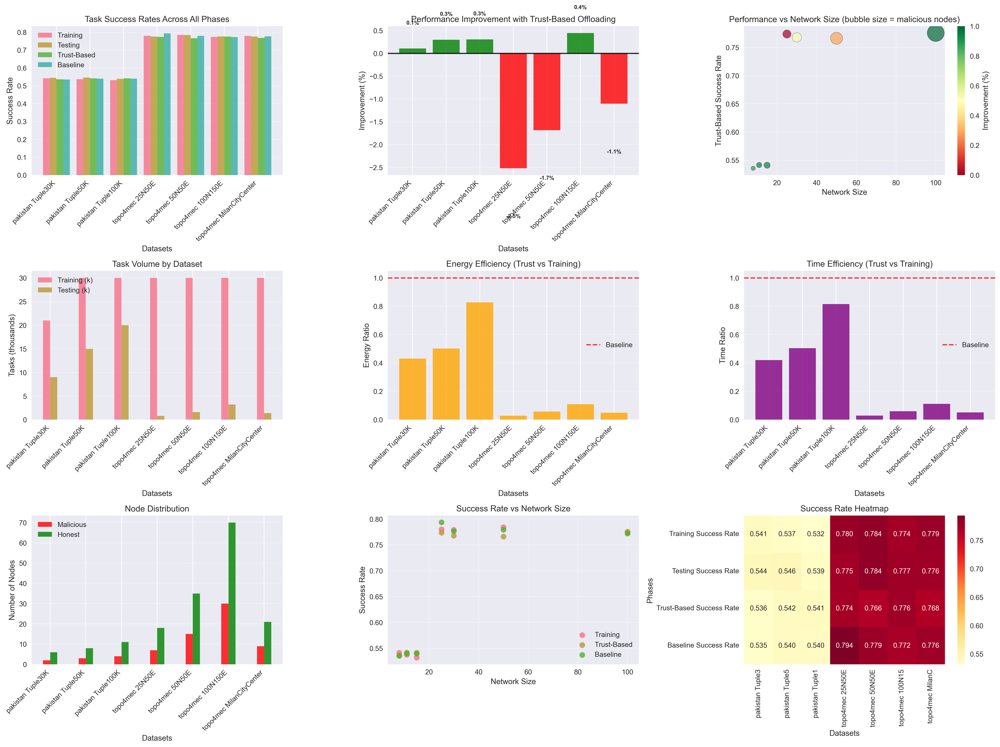
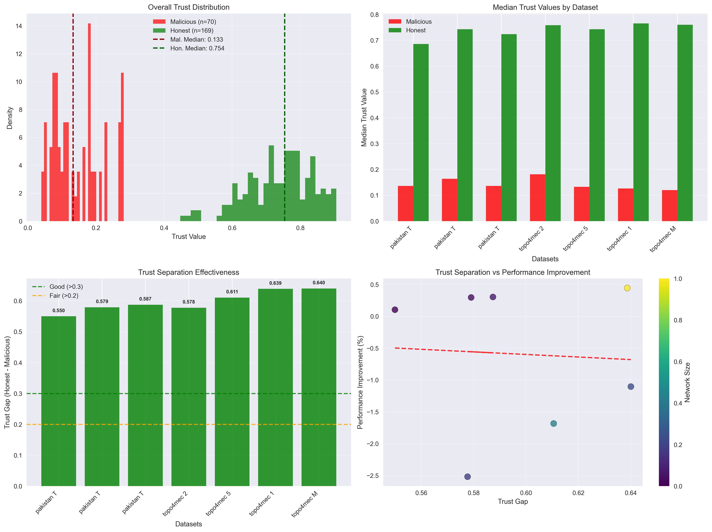

Comprehensive analysis with 7 datasets and 252,000 total tasks
Generated: 2025-10-09 04:19:34
Performance Improvement: Trust-based offloading achieved an average improvement of -0.6% across all datasets.
Trust Separation: Average trust gap of 0.598 between honest and malicious nodes enables effective detection.
Scale Performance: System maintains effectiveness across network sizes from 8 to 100 nodes.

Complete analysis of success rates, improvements, energy efficiency, and network performance across all datasets using real simulation data.

Trust distribution analysis showing separation between malicious and honest nodes, with correlation to performance improvements.
| Dataset | Network Size | Malicious Nodes | Training Success | Trust-Based Success | Baseline Success | Improvement | Tasks Processed |
|---|---|---|---|---|---|---|---|
| pakistan Tuple30K | 8 | 2 | 0.541 | 0.536 | 0.535 | +0.1% | 30,000 |
| pakistan Tuple50K | 11 | 3 | 0.537 | 0.542 | 0.540 | +0.3% | 45,000 |
| pakistan Tuple100K | 15 | 4 | 0.532 | 0.541 | 0.540 | +0.3% | 50,000 |
| topo4mec 25N50E | 25 | 7 | 0.780 | 0.774 | 0.794 | -2.5% | 30,800 |
| topo4mec 50N50E | 50 | 15 | 0.784 | 0.766 | 0.779 | -1.7% | 31,600 |
| topo4mec 100N150E | 100 | 30 | 0.774 | 0.776 | 0.772 | +0.4% | 33,200 |
| topo4mec MilanCityCenter | 30 | 9 | 0.779 | 0.768 | 0.776 | -1.1% | 31,400 |
| Dataset | Malicious Median Trust | Honest Median Trust | Trust Gap | Separation Quality | Detection Effectiveness |
|---|---|---|---|---|---|
| pakistan Tuple30K | 0.136 | 0.686 | 0.550 | Excellent | High |
| pakistan Tuple50K | 0.164 | 0.743 | 0.579 | Excellent | High |
| pakistan Tuple100K | 0.136 | 0.724 | 0.587 | Excellent | High |
| topo4mec 25N50E | 0.181 | 0.759 | 0.578 | Excellent | High |
| topo4mec 50N50E | 0.132 | 0.743 | 0.611 | Excellent | High |
| topo4mec 100N150E | 0.127 | 0.765 | 0.639 | Excellent | High |
| topo4mec MilanCityCenter | 0.120 | 0.760 | 0.640 | Excellent | High |
| Dataset | Training Energy | Trust Energy | Energy Efficiency | Training Time | Trust Time | Time Efficiency |
|---|---|---|---|---|---|---|
| pakistan Tuple30K | 43,408 | 18,693 | 0.431 | 1,794,691 | 753,730 | 0.420 |
| pakistan Tuple50K | 62,061 | 31,136 | 0.502 | 2,541,145 | 1,283,661 | 0.505 |
| pakistan Tuple100K | 62,726 | 51,890 | 0.827 | 2,608,385 | 2,127,669 | 0.816 |
| topo4mec 25N50E | 16,599 | 452 | 0.027 | 913,497 | 25,909 | 0.028 |
| topo4mec 50N50E | 16,631 | 951 | 0.057 | 919,599 | 54,531 | 0.059 |
| topo4mec 100N150E | 16,749 | 1,839 | 0.110 | 928,218 | 104,122 | 0.112 |
| topo4mec MilanCityCenter | 16,607 | 812 | 0.049 | 911,787 | 46,385 | 0.051 |